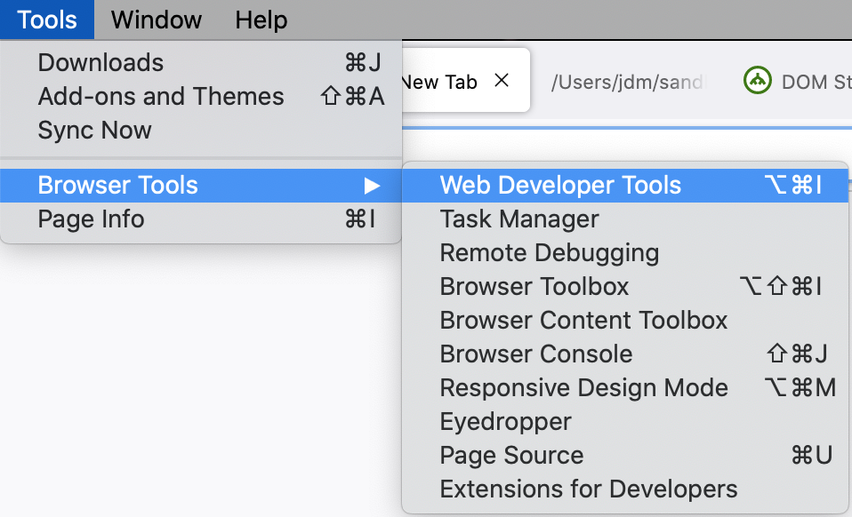
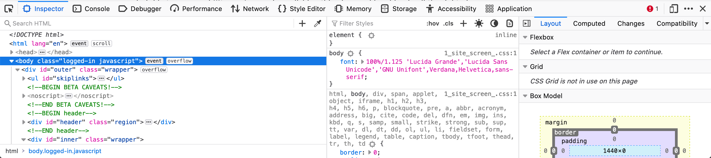
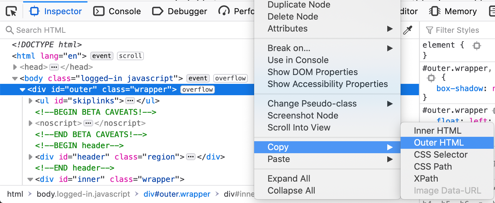
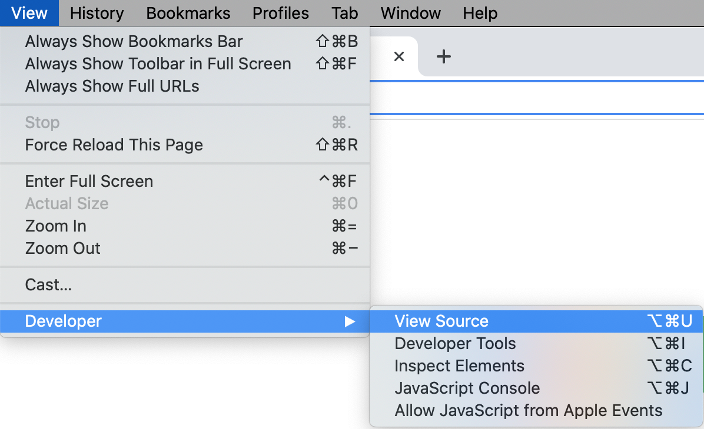
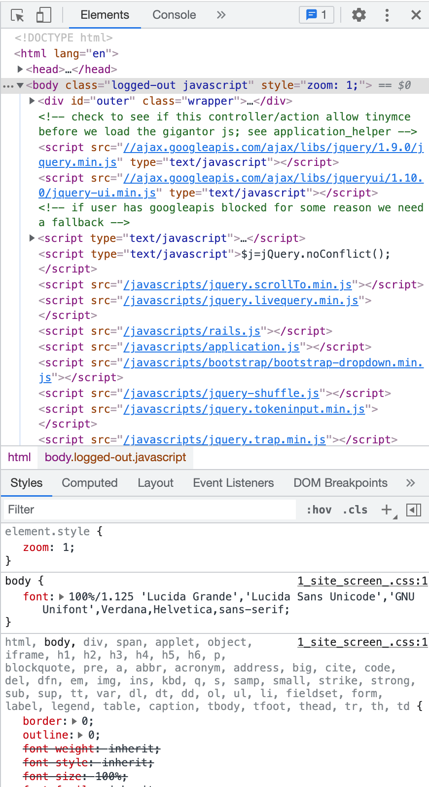
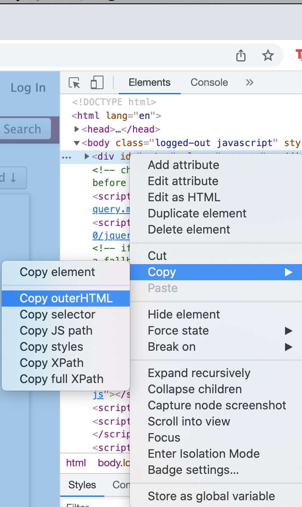

Copy the HTML from AO3 into this textbox to set up the sandbox.
- Go to the tab containing the work you want to bring into the sandbox.
- Open the web developer tools.

- A bunch of panels should appear at the bottom of the view.

- Right click on the first child of the
body element and copy its outer HTML.

- Paste the copied HTML into the textbox on this page.
- Go to the tab containing the work you want to bring into the sandbox.
- Open the web developer tools.

- A bunch of panels should appear at the right side of the view.

- Right click on the first child of the
body element and copy its outer HTML.

- Paste the copied HTML into the textbox on this page.